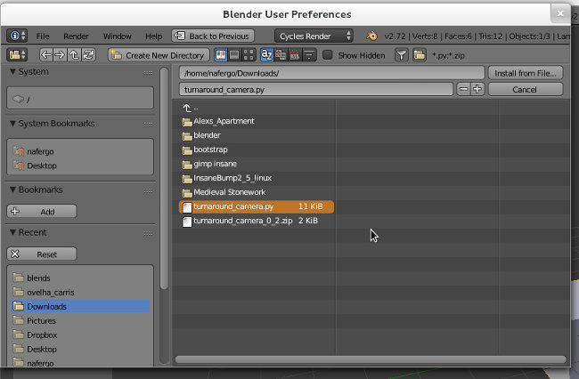
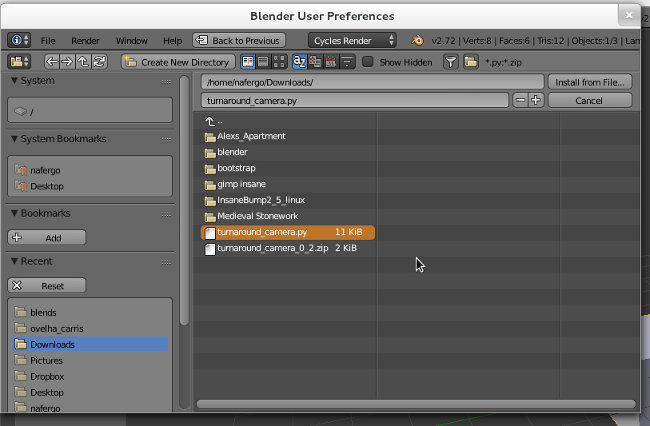
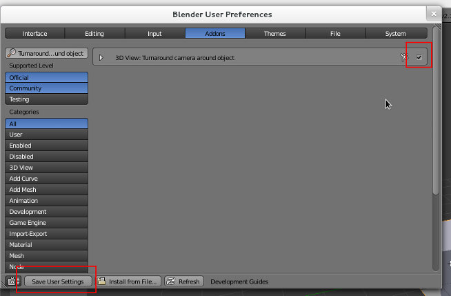

Criar uma animação Turnaround
Com add-on Turnaround Camera
1. Descarregue o add-on Turnaround Camera.
2. Instale o add-on.
 

3. Se pretender utilizar novamente este add-on e não quer repetir os passos anteriores, não se esqueça de clicar em Save User Settings.
4. Selecione o objeto em torno do qual pretende criar a animação da câmara. Na aba Misc surge o painel com as opções de configuração do add-on.
- Botão Turnaround: botão para criar animação. Se alterar os parâmetros de configuração tem de clicar novamente neste botão para atualizar a animação.
- Use cursor position: Em vez do objeto selecionado, utiliza a posição do cursor 3D como pivot para a animação.
- Camera: identifica a câmara que irá ser animada.
- Start/End Frame: número das frames da animação, determina a frame em que se inicia e em que termina a animação.
- X, Y e Z: número de rotações (revoluções) em torno de cada eixo. Por predefinição, a animação faz uma rotação completa em torno do eixo Z.
- -X, -Y e -Z: inverte a direção da rotação.
- Back and forward: cria uma animação com avanço-recuo. A câmara regressa à posição inicial.
- Lens Effects: permite animar a distância focal com efeito Zoom
- Create track constraint: cria um constraint para a câmara que fica disponível no painel de constraints para posterior configuração adicional.
Manualmente
...